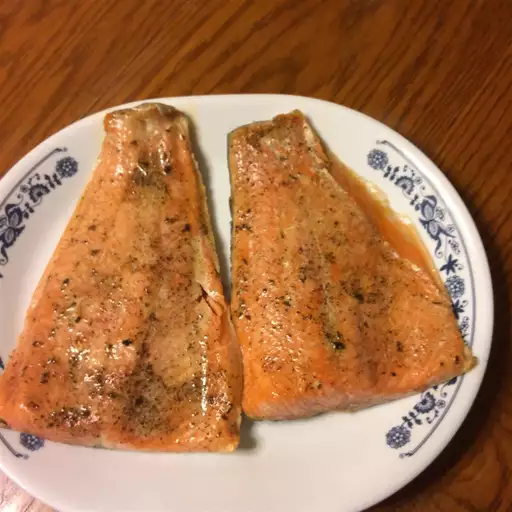

Trout

Description
Trout is a freshwater ray-finned fish. This recipe is an easy seafood dinner.
Ingredients
- ¼ cup butter
- 2 (8 ounce) whole trout, butterflied and deboned
- salt and freshly ground black pepper to taste
- 2 tablespoons freshly squeezed lemon juice
- 2 tablespoons chopped fresh flat-leaf parsley
Steps
- Melt butter in a saucepan over medium-low heat until butter smells toasted and is golden brown, about 1 minute
- Turn off heat. Line a baking sheet with a piece of aluminum foil.
- Place trout onto foil; open trout so skin sides are down.
- Drizzle each trout with about 1/2 teaspoon melted butter. Generously season with salt and black pepper.
- Move an oven rack to 5 or 6 inches below the heat source and preheat the oven's broiler on high heat.
- Broil trout until opaque and barely firm to the touch, 2 or 3 minutes. Remove from oven.
- Return pan of remaining melted butter over high heat; stir in lemon juice and parsley.
- Bring butter sauce to a boil; whisk to combine.
- Serve trout on plates and drizzle with butter sauce.
Return Home